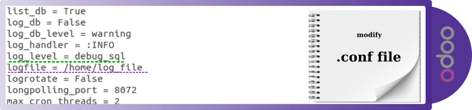

Know the queries resolved in the object database
With this module you can see the queries that are made in postgres for one
or several objects, according to a regular expression. The objective is to
evaluate the consumption of the data layer of your modules, including odoo
base modules. It will also serve to verify the effectiveness of the
modules: Go Ui View Cache, website cache and web cache.
The JPV team recommends the following modules to improve the performance of your server:
Main view
In the main view, you will find the models that you can create and query
individually or in groups. It will also allow you to choose the different
graphs and statistics offered by the module to visually assess the highest
resource consumption on your server.
Personalized consultations
Custom queries allow you to select the model you want to evaluate, the type of query and a pre-established regular expression.
The system offers you a regular automatic expression according to your selected prefixes but you can modify these prefixes.
Three types of graphics
Examine and make decisions with the data thrown by your queries using the three types of graphs that represent the results in a graphical and intuitive way.
View the data in a pivot view
The data can be analyzed in the form of a statistical table.
Export the data collected in an xls file
This module provides the facility to save the results of the queries in the form of the models in an xls file.
Improve the performance of your server
In this wizard view modules are indicated which are recommended to improve performance by alleviating the consumption of odoo to postgres.
To test the modules of ir ui view cache, web base cache or website base cache,
you must change the log_leve parameter in the configuration file to debug_sql
